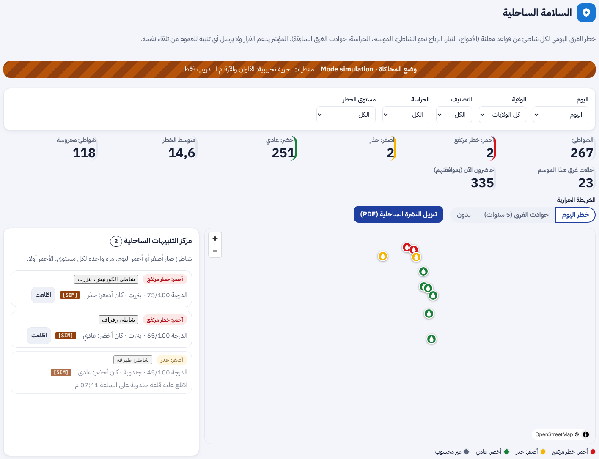
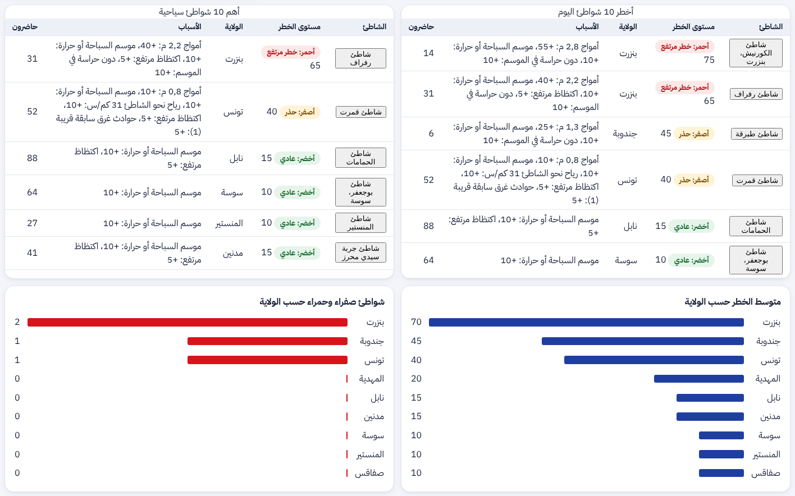
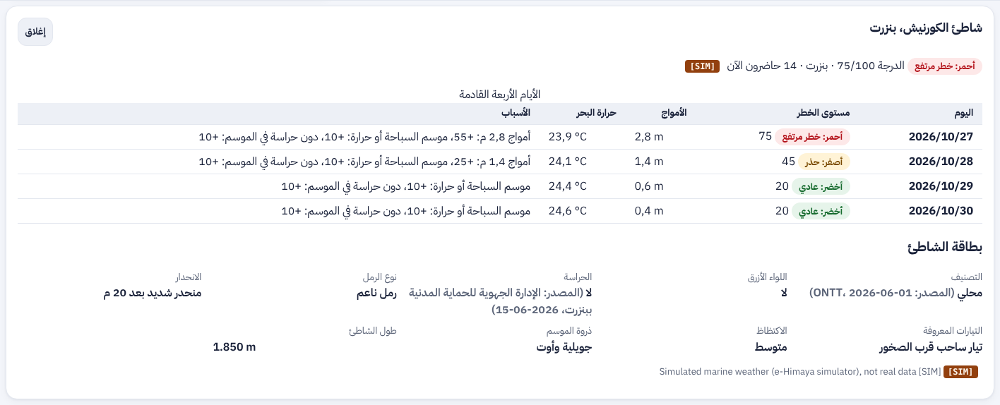
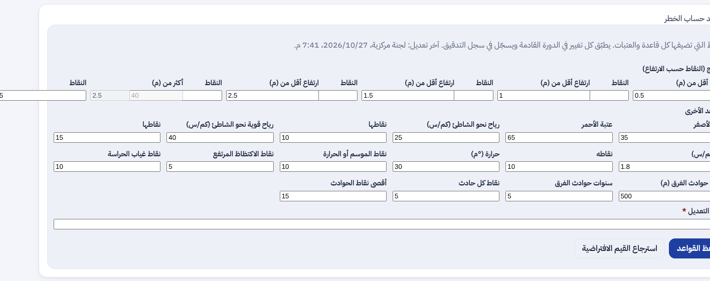

ء-حماية e-Himaya
تقرير المرحلة L1b: الخريطة التفاعلية (البند 10) والسلامة الساحلية (البند 4): مؤشر خطر الغرق اليومي، الطقس البحري، اللوحة الساحلية ومركز التنبيهات والنشرة، الشواطئ في التطبيق، والأقرب على الطريق؛ مع تتبّع وثيقة SmartCoast بندا بندا
1. أين تقع هذه المرحلة من مسار المشروع
التبليغ
←
المعالجة
←
التحليل
←
مؤشرات الأداء KPI
←
التنبؤ بالذكاء الاصطناعي
←
اتخاذ القرار
- المعالجة: في صفحة الحادث تختار القاعة أقرب مستشفى بالزمن على الطريق، ويُسجَّل اختيارها في سجل الحادث.
- التحليل والمؤشرات: لوحة ساحلية بعدد الشواطئ الخطرة اليوم ومتوسط الخطر والتوزيع حسب الولاية وأخطر عشرة شواطئ.
- اتخاذ القرار: تنبيه حي حين يصير شاطئ أصفر أو أحمر، ونشرة يومية للقاعات الساحلية. المؤشر لدعم القرار ولا يطلق إنذارا عاما وحده.
- التنبؤ بالتعلّم الآلي يأتي في L5 (البند 9) مقارنةً بالقواعد، لا بديلا عنها.
2. مراجعة ← تصميم ← تطوير
الطلب: «نعم أبدأ المرحلة L1b (الخريطة التفاعلية والسلامة الساحلية) ولكن أريد التأكيد على ما جاء بهذه الوثيقة من معلومات». كل بند من الوثيقة متتبَّع إلى مكانه في
design-l1b-coastal.md §1: ما بُني، وما كان موجودا، وما أُجّل، وما بُني بصيغة تحترم الضوابط.
قرار معروض على يامن: الوثيقة تطلب تتبّع كل المستخدمين حيا. بُني المقترح بدله: عدّ مجهول بموافقة، «أنا في هذا الشاطئ» برمز يومي عشوائي دون حساب ولا موقع، يُعدّ 30 دقيقة ويُمحى بعد 24 ساعة. إن اختار يامن «الضوابط كما هي» يُزال.
- مؤشر خطر الغرق: لكل شاطئ ولليوم وثلاثة أيام، من 0 إلى 100: الأمواج، الريح نحو الشاطئ، التيار، الموسم أو الحرارة، الإقبال، غياب الحراسة، الحوادث السابقة في 500 م. أخضر تحت 35، أصفر حتى 59، أحمر من 60. البطاقة تذكر سبب كل نقطة.
- الطقس البحري: Open-Meteo Marine (الأمواج، حرارة البحر، التيار) كل ساعة بدفعات، أو المحاكي [SIM] دون شبكة. العنوان قابل للتغيير ليشير إلى المعهد الوطني للرصد الجوي متى اتُّفق معه.
- القواعد: العتبات والنقاط في إعداد واحد تعدّله اللجنة المركزية من اللوحة مع سجل تدقيق؛ وتقرؤه بقية الأدوار.
- اللوحة الساحلية: التصفية بالولاية والتصنيف والحراسة والخطر واليوم، المؤشرات، الخريطة الملوّنة والحرارية (الخطر أو الحوادث)، مركز التنبيهات الحي مع «اطّلعت»، أخطر 10 وأهم 10 سياحية، الرسم حسب الولاية، بطاقة الشاطئ بمصدر كل حقل وتاريخه، والنشرة PDF.
- التطبيق 0.22.0: «الشواطئ اليوم» في مركز الطوارئ: الخريطة والقائمة بالألوان والأسباب؛ «نبّهني قرب شاطئ خطر» بموافقة يُحسب في الهاتف فلا يُرسل الموقع؛ بطاقة الشاطئ بالأيام الأربعة؛ «أنا في هذا الشاطئ» بموافقة ثانية.
- الأقرب على الطريق: «الأقرب إليّ» يعرض الدقائق بالسيارة، وصفحة الحادث تعرض أقرب المستشفيات بالمسافة والزمن.
- الخريطة التفاعلية: خريطة اللوحة ترسم الخطوط والمساحات (الغابات، الأودية…) وتُظهر الطبقات «المفعّلة افتراضيا» دون اختيار.
- تعديل الطبقات وحذفها: الشواطئ أماكنُ طبقة عادية؛ تعديل مكان أو حذفه أو إيقاف الطبقة يُخرجه من الحساب في الدورة التالية، واسترجاعه يعيده.
3. لقطات
صفحة «السلامة الساحلية» في لوحة القيادة بالعربية: التصفية والمؤشرات والخريطة ومركز التنبيهات، ثم القوائم والرسوم حسب الولاية:


بطاقة الشاطئ بالأيام الأربعة والأسباب ومصدر كل حقل، ومحرّر قواعد الخطر:


4. التقدم لكل جزء
| البند | الحالة | التقدم |
|---|
| F-DSH-51 الخريطة التفاعلية والسلامة الساحلية | منجز (L1b) |
|
| F-DSH-52 اللوحة الساحلية | منجز (L1b) |
|
| F-DSH-53 مركز التنبيهات الساحلية والقواعد | منجز (L1b) |
|
| F-DSH-54 أقرب المستشفيات على الطريق | منجز (L1b) |
|
| F-APP-146 الشواطئ في التطبيق | منجز (L1b) |
|
| F-SRV-15 الطقس البحري وحساب الخطر | منجز (L1b) |
|
| العدّ المجهول بموافقة | مبني، ينتظر قرار يامن |
|
| وضع «مركز الحراسة» في تطبيق الأعوان | مؤجل (S1) |
|
| التعلّم الآلي للخطر | L5 (البند 9) |
|
تقدم L1b: 100%. مراحل الخريطة والقرار (L1a إلى L5): المرحلة الثانية من ست.
5. المحاكاة [SIM]
- [SIM] في التطوير والاختبار يعمل محاكي الطقس البحري، وتحمل كل الشاشات شارة [SIM] وإشارة المصدر. في الإنتاج يرفض الخادم الطقس المحاكى.
- [SIM] اللقطات مأخوذة بواجهة برمجية محاكاة: الشواطئ والأرقام والحوادث فيها أمثلة، لا معطيات حقيقية.
- حقول التصنيف والعلم الأزرق والحراسة وجودة المياه تبقى «غير متوفر» حتى تصل من مصدرها (سجل القرارات GEO-02).
6. الاختبارات المطبقة
| المكوّن | العدد | النتيجة |
|---|
| الخلفية (pytest) | 914، منها الجديدة في test_coastal.py و test_incident_hospitals.py | كلها ناجحة |
| لوحة القيادة (vitest) | 486، منها CoastalPage.test.tsx و NearHospitals.test.tsx | كلها ناجحة |
| لوحة القيادة (Playwright مع axe) | 38، منها صفحة /coastal | كلها ناجحة |
| تطبيق الهاتف (flutter test) | 575، منها beaches_test.dart والزمن على الطريق | كلها ناجحة |
ruff و mypy و eslint و tsc و dart analyze | — | لا ملاحظة |
- القواعد: كل عامل ونقاطه وعتباته، القصّ عند 100، والقواعد المعدّلة؛ الريح نحو الشاطئ حسب اتجاه البحر.
- التنبيه حين يتغيّر اللون، و«اطّلعت»، والنطاق الجهوي؛ تعديل القواعد للجنة المركزية فقط.
- الحضور: الرمز وحده دون حساب، العدّ 30 دقيقة، المحو بعد 24 ساعة.
- التطبيق: لا تنبيه قبل الموافقة، التنبيه داخل نصف القطر فقط، الرمز اليومي يبقى لليوم ويتجدّد غدا، والطلب لا يحمل إلا الرمز.
- المستشفيات: الطبقة الخاصة بالمواطن مستبعدة، اختيار مستشفى غير معروض مرفوض، والاختيار في سجل الحادث.
8. المخرجات المحيَّنة
- الملف الوصفي V17 (docx و pdf) في
spec/: F-DSH-51 إلى 54 و F-APP-146 و F-SRV-15 منجزة، 383 مسارا و457 عملية، الاختبارات، القراران GEO-02 و PRV-05 في سجل القرارات، و L1b في خارطة الطريق.
- مخططات UML في
diagrams/: مخطط تسلسل جديد «خطر الغرق والتنبيه الساحلي» (52)، وأصناف الشاطئ في مخطط الأصناف، وحالات استعمال جديدة للمواطن والقاعة.
- العرض للمسؤولين في
presentation/: 32 مرحلة، الاختبارات، وخارطة الطريق.
- مرجع التصميم مُعاد توليده: design-reference.html (أيقونتا الشاطئ والتحذير في التطبيق).
- سجل الإصدارات، القائمة المؤجلة (§3.1: ما أُجّل من الوثيقة)، ودليلا التنصيب (السلامة الساحلية).
9. ملاحظات وانحرافات
- التنبيه قرب شاطئ خطر يعمل حين يكون التطبيق مفتوحا؛ التنبيه في الخلفية يحتاج إذن الموقع الدائم، فأُجّل للدراسة (S2).
- الإشعار بشاطئ صار خطرا للمواطنين لم يُرسل آليا: الإنذار العام معطّل حتى التفويض (LGL-06)، والتنبيه الجغرافي بموافقة شخصين يبقى متاحا للقاعة.
- «أفضل جودة مياه» يبقى «غير متوفر» حتى تصل نتائج وزارة الصحة.
- أهداف الوثيقة (استجابة < 2 ث، دقة توقع > 70%) لا تُعلن قبل قياسها في التجربة، وتُعتمد في OPS-01 و AI-01.
10. ما يلي
جواب يامن على العدّ المجهول. ثم المرحلة L2: حماية كلمات المرور (البند 12: رمز التحقق بعد 3 محاولات فاشلة؛ البند 8: 8 أحرف على الأقل)، ثم L3 و L4 و L5.